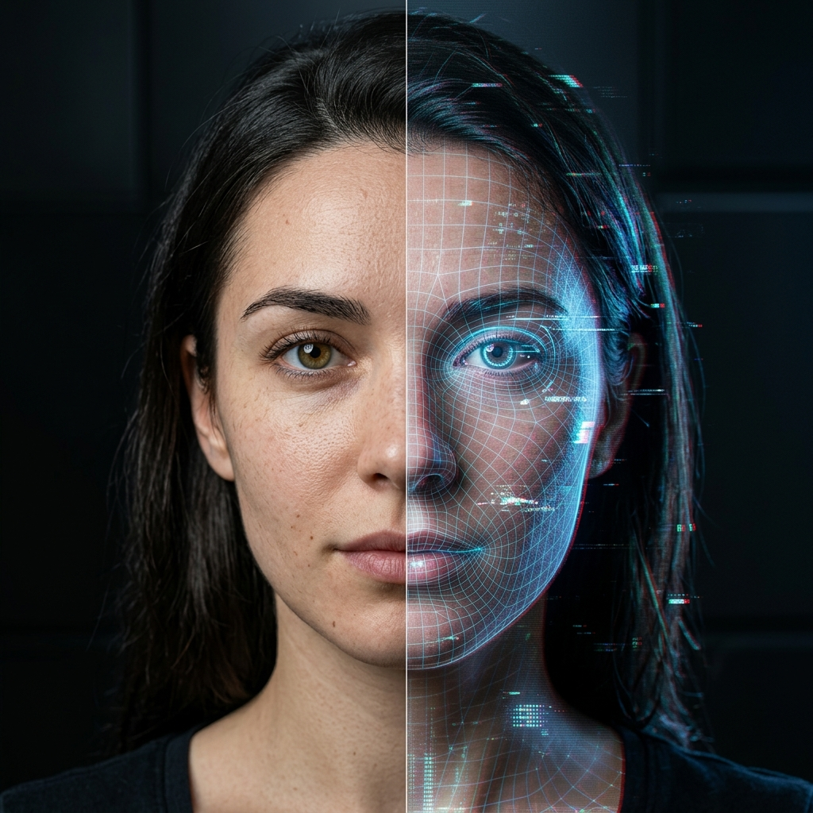

AI-Powered
Deepfake Detection
for Images and Videos
Analyze media files using state-of-the-art deep learning models. Detect manipulated content with visual explanations like Grad-CAM heatmaps.

Image Analysis
Detect manipulated or generated images
Video Analysis
Analyze entire videos frame by frame
Visual Explanations
Grad-CAM heatmaps to highlight suspicious regions
Detect Manipulated Media
Upload an image or video file to detect whether it is real or deepfake.
Drag and drop an image file here
or click to browse
Image Analysis Result
Uploaded Image
Predicted Result
Grad-CAM Heatmap
Analysis Details
Key Observations
- Suspicious regions detected around eyes and mouth.
- Inconsistent texture in facial skin.
- Possible artifacts in high-attention areas.
Video Analysis Result
Video Player
Predicted Result
Grad-CAM (Current Frame)
Frame-wise Analysis
Click any frame to jump time and inspect Grad-CAM attributionAnalysis Details
Key Observations
- Inconsistent facial features across frames.
- High attention around eyes, mouth and face boundaries.
- Possible temporal artifacts detected.
Detection History
View your past analysis results.
| # | File Name | Type | Result | Confidence | Date & Time | Actions |
|---|
About DeepDetect
This project uses deep learning models to detect manipulated or AI-generated images and videos. It provides both a prediction score and visual explanations using Grad-CAM to highlight suspicious regions.
State-of-the-art Models
Fine-tuned Xception/CNN models for robust detection.
Grad-CAM Visualization
Highlights regions that influence the prediction.
Supports Images & Videos
Analyze both images and entire video clips.
User Friendly
Simple and intuitive interface for easy analysis.
System Architecture & Forensic Pipeline
DeepDetect combines multi-stage forensic analysis to counter facial swaps, neural face reenactments, and generative diffusion artifacts.
Ingestion & Validation
Format checking, integrity validation, EXIF metadata extraction, and resolution normalization.
Uniform Frame Sampling
For video streams, temporal extraction samples key frames across scenes with face localization.
Deep Feature Extraction
Pretrained Xception convolutional backbone with modified classification head evaluates artifact patterns.
Grad-CAM Attribution
Computes gradient attributions of the last convolutional layer to highlight manipulated facial areas.